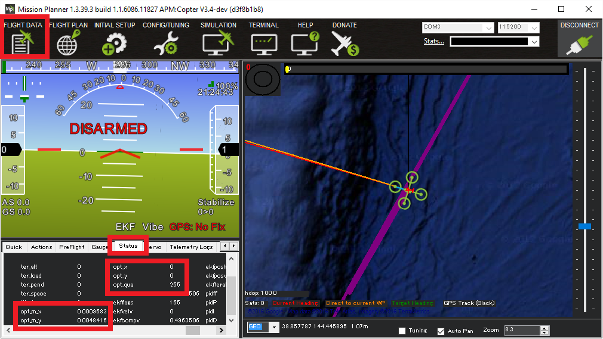
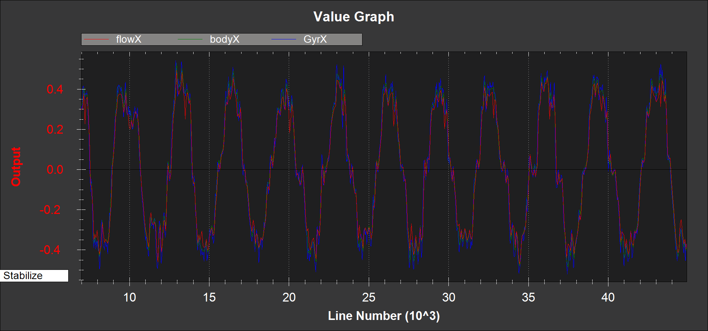
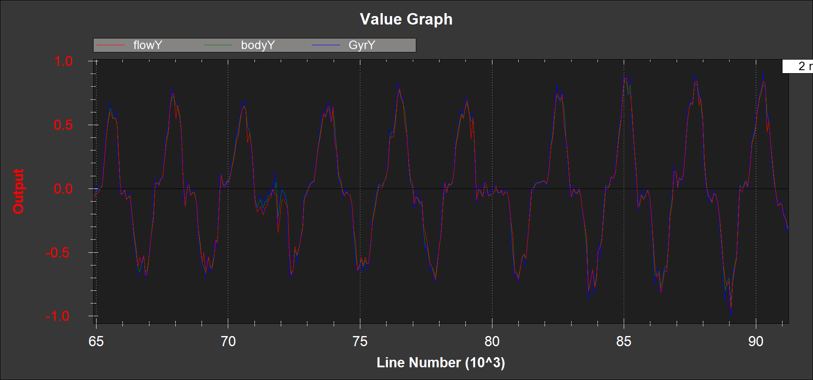
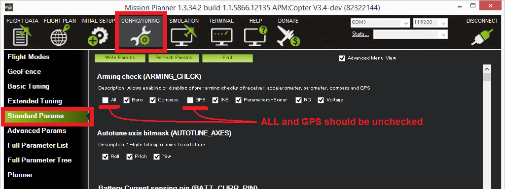

[copywiki destination=”copter,plane,rover”]
Optical Flow Sensor Testing and Setup¶
Testing the sensor¶
With the sensor connected to the autopilot, connect to the autopilot with the Mission Planner and open the Flight Data screen’s Status tab. If the sensor is operating you should see non-zero opt_m_x, opt_m_y and opt_qua values.
{kind=link}
Calibrating the sensor¶
#. Connect to your autopilot and ensure that logging while disarmed is enabled by setting LOG_DISARMED to 1 [site wiki=”rover”] #. Ensure the FLOW_HGT_OVR parameter is set to the height of the sensor above ground [/site]
Find a location with a textured surface and good lighting (natural light or strong incandescent) [site wiki=”plane,copter”]
Remove Propellers (safety first)
Power on the vehicle and hold level away from your body and at eye level
Rotate about the vehicle in roll through a range from -15 to +15 degrees in about a second and then back again. Repeat this 5 to 10 times. By closing one eye you will be able to keep the centre of the sensor stationary against the background while you do the rotation. [/site] [site wiki=”rover”]
Power on the vehicle
Rotate the vehicle (keeping it as close to the ground as practical) in roll through a range from -15 to +15 degrees in about a second and then back again. Repeat this 5 to 10 times. By closing one eye you will be able to keep the centre of the sensor stationary against the background while you do the rotation. [/site]
Repeat about the vehicle pitch axis.
Download the data flash logs and plot the
OF.flowX,OF.bodyXandIMU.GyrXdata. It should look something like this:If
OF.flowXis larger or smaller thanOF.bodyX, then it can be adjusted by changing theFLOW_FXSCALERparameterIF
OF.bodyXis uncorrelated or opposite sign toIMU.GyrX, the FLOW_ORIENT_YAW parameter is probably set incorrectly or you do not have the flow sensor pointing downwardsPlot the
OF.flowY,OF.bodyYband,IMU.GyrYdata. It should look something like this:If
OF.flowYis larger or smaller thanOF.bodyY, then it can be adjusted by changing theFLOW_FYSCALERparameterIF
OF.bodyYis uncorrelated or opposite sign toIMU.GyrY, the FLOW_ORIENT_YAW parameter is probably set incorrectly or you do not have the flow sensor pointing downwards
{kind=link}
{kind=link}
[site wiki=”plane,copter”] Range Sensor Check ==================
Check the EKF5.meaRng message in the flashlog from your flow
sensor calibration test. Check the following:
There is continuous range measurement.
It outputs a range on the ground that is 10cm of the expected value (remember that measured range will increase when you roll or pitch the vehicle because the laser is then measuring on a slant)
[/site]
Pre-Arm checks¶
To allow arming and taking off in Loiter without a GPS the GPS arming check should be turned off as shown below. Unchecking “All” and “GPS” and leave all other options checked.
{kind=link}
Because optical flow requires good sonar/range finder data when the optical flow is enabled, an additional pre-arm check is enforced.
[site wiki=”plane,copter”] While the vehicle is disarmed you should lift the vehicle straight up to at least 50cm but no higher than 2m (if the rangefinder sees a distance of over 2m you will need to restart the autopilot).
The error message when arming fails this check is “PreArm: check range finder”
This check can be disabled by unchecking the “Parameter/Sonar” arming check.
First Flight¶
For EKF2, set EK2_GPS_TYPE = 0; for EKF3, set EK3_SRC1_VELXY = 0 (we don’t want the optical flow being used by the EKF at this stage)
Perform a short test flight hovering in STABILIZE or AltHold for copter, or QSTABILIZE or QHOVER for QuadPlane, at small lean angles at heights ranging from 50cm to 3m with
Download the flash log and plot the following in mission planner
EKF5.meaRng should correlate with the change in vehicle height
OF.flowXandOF.flowYshould be varyingOF.bodyXandOF.bodyYshould be consistent with IMU.GyrX and IMU.GyrY
Second Flight¶
Warning
You will need at least 15m of clear space around the vehicle to do this flight safely. If the optical flow velocity estimates are bad, you will have little warning and the copter may lean to its maximum lean angle very quickly.
For EKF2, set EK2_GPS_TYPE = 3; for EKF3, set EK3_SRC1_VELXY = 5 and EK3_SRC1_POSXY = 0 to make the EKF ignore GPS and use the flow sensor
Ensure you have a loiter and hover mode available on you transmitter.
Set “EKF Origin” on Ground Control Station map. In Mission Planner, right click, select “Set Home here”, and choose to set “set EKF origin here”.
Take-off in loiter and bring the Copter/QuadPlane to about 1m height
If the vehicle starts to accelerate away or there is erratic pitch or roll movement, then switch to hover and land. You will need to download the log file and share it on the forums to understand why.
If it holds location then congratulations, you have succeeded and can now start experimenting with height changes and moving it around in the loiter mode
[/site]
Setup for Normal Operation¶
For EKF2:¶
Verify that EK2_ENABLE = 1, enabling EKF2
Set EK2_FLOW_DELAY depending on your optical flow sensor
To only use the optical flow sensor and not use the GPS, set EK2_GPS_TYPE = 3; to use the GPS with the optical flow sensor, set this to 0.
For EKF3:¶
Note
EKF3 is enabled and used by default in ArduPilot firmware 4.1 and higher
Verify that EK3_ENABLE = 1, enabling EKF3
Set AHRS_EKF_TYPE = 3 to use EKF3
Set EK3_SRC_OPTIONS = 0 to disable FuseAllVelocities
Set EK3_FLOW_DELAY depending on your optical flow sensor
Set EK3_SRC1_POSXY = 3 (Primary horizontal position from GPS, set this to 0 to only use the optical flow sensor)
Set EK3_SRC1_VELXY = 5 (Primary horizontal velocity from OpticalFlow)
Set EK3_SRC1_POSZ = 1 (Primary vertical position from barometer)
Set EK3_SRC1_VELZ = 0 (No primary vertical velocity sensor)
Set EK3_SRC1_YAW = 1 (Primary yaw/heading from compass)
Alternatively, GPS can work with OpticalFlow using EKF source switching.
See GPS / Non-GPS Transitions for information on EKF source switching.
[site wiki=”plane,copter”]
.. note:: When Copters have an optical flow sensor enabled (along with a rangefinder) and it is specified as the only horizontal position source (e.g. EK3_SRCx_VELXY``=OpticalFlow and ``EK3_SRCx_POSXY``=None) and the vehicle is flying in a pilot controlled mode requiring a position estimate (ie Loiter or PosHold) the vehicle will not climb above the rangefinder's maximum altitude specified in ``RNGFNDx_MAX_CM. This is a safety mechanism because otherwise the EKF failsafe would trigger as the vehicle flew out of rangefinder range.
Example Video (Copter-3.4)¶
Inflight Calibration¶
Copter-4.2.0 includes an inflight calibration procedure:
Set RCx_OPTION = 158 (Optflow Calibration) to allow starting the calibration from an auxiliary switch
Setup the EKF3 to use GPS (the default)
EK3_SRC1_POSXY = 3 (GPS)
EK3_SRC1_POSZ = 1 (Baro)
EK3_SRC1_VELXY = 3 (GPS)
EK3_SRC1_VELZ = 3 (GPS)
EK3_SRC1_YAW = 1 (Compass)
EK3_SRC_OPTIONS = 0 (Disable FuseAllVelocities)
Fly the vehicle in Loiter mode to at least 10m (higher is better but stay within the limits of the rangefinder)
Pull the auxiliary switch high to start the calibration
Use the roll and pitch sticks to rock the vehicle back and forth in both roll and pitch
Check the GCS “Messages” tab for output like below confirming the calibration is complete
FlowCal: Started
FlowCal: x:0% y:0%
FlowCal: x:66% y:6%
FlowCal: x:100% y:74%
FlowCal: samples collected
FlowCal: scalarx:0.976 fit: 0.10 <-- lower "fit" values are better
FlowCal: scalary:0.858 fit: 0.04
FlowCal: FLOW_FXSCALER=30.00000, FLOW_FYSCALER=171.0000
Land the vehicle and setup the EKF3 to use OpticalFlow
EK3_SRC1_POSXY = 0 (None)
EK3_SRC1_VELXY = 5 (Optical Flow)
EK3_SRC1_POSZ = 1 (Baro)
EK3_SRC1_VELZ = 0 (None)
EK3_SRC1_YAW = 1 (Compass)
EK3_SRC_OPTIONS = 0 (Disable FuseAllVelocities)
Fly the vehicle again to check performance
An alternative method which avoids the need to land and change EKF3 parameters between calibration and testing is to setup GPS/Non-GPS transitions so the pilot can manually change between GPS and Optical Flow inflight. The full parameter list is below assuming the pilot will engage the calibration using RC input 8 (a 2-position switch) and switch between GPS and Optical flow using RC input 9 (a 3-position switch)
RC8_OPTION = 158 (Optflow Calibration)
RC9_OPTION = 90 (EKF Pos Source) low is GPS, middle is OpticalFlow, high is unused
EK3_SRC1_POSXY = 3 (GPS)
EK3_SRC1_POSZ = 1 (Baro)
EK3_SRC1_VELXY = 3 (GPS)
EK3_SRC1_VELZ = 3 (GPS)
EK3_SRC1_YAW = 1 (Compass)
EK3_SRC2_POSXY = 0 (None)
EK3_SRC2_VELXY = 5 (Optical Flow)
EK3_SRC2_POSZ = 1 (Baro)
EK3_SRC2_VELZ = 0 (None)
EK3_SRC2_YAW = 1 (Compass)
EK3_SRC_OPTIONS = 0 (Disable FuseAllVelocities)
Note
To use the inflight calibration EKF3 must be enabled. This is the default for ArduPilot 4.1 and higher
[/site]